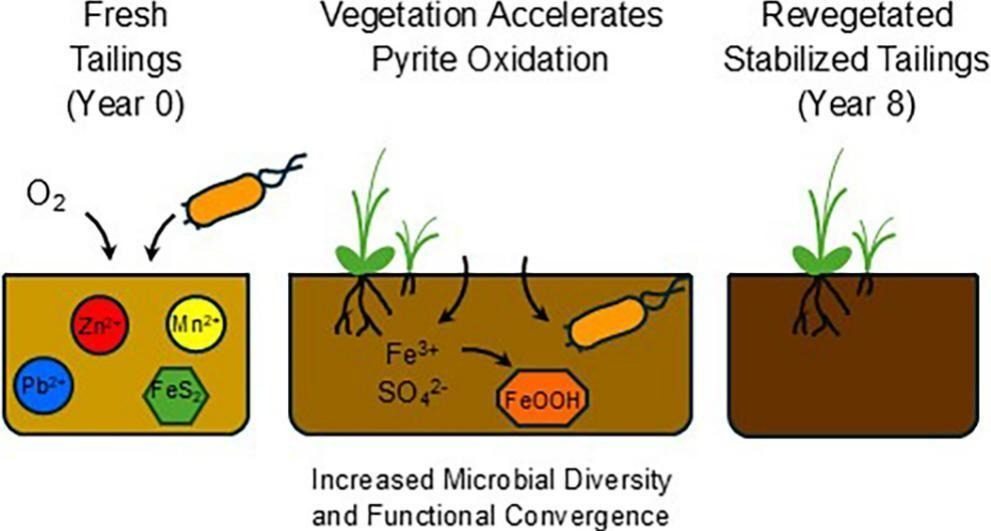
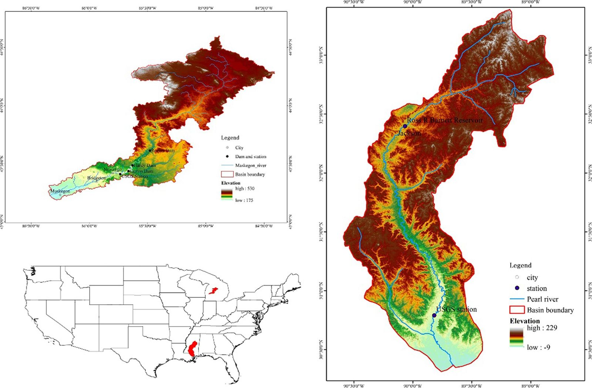

Our research follows water through the systems that carry it: down rivers and across floodplains, through pressurised pipes and drinking-water treatment works, and into the ground beneath contaminated industrial sites. We model where it goes, what it carries, and how the infrastructure we build either protects people or fails them.

Why It Matters
Water is the most direct physical link between the environment and human health, and its three failure modes are converging rather than staying separate. Climate change is intensifying both flooding and scarcity, sometimes in the same catchment in the same year. Ageing infrastructure leaks, surges, and spills. A century and a half of industry has left a legacy of contaminated ground sitting above the aquifers people drink from. And water is not only a physical system: it is priced, regulated, traded, and governed, and those decisions determine who bears the risk.
What holds our research together is a refusal to treat these as separate problems. The same catchment that floods is the one that runs dry; the same treatment works that cleans water consumes energy and produces sludge; the same ground that stores water stores contamination. We work across the whole of it, from the physics of a pressure surge in a pipe to the political economy of a water utility.
What We Do
Flooding and water risk
Prof. Mark Trigg, Professor of Water Risk and Co-Director of water@leeds, works on flood hazard at scales from the local to the global, combining hydrology, hydrodynamics, remote sensing, and numerical modelling. His research addresses a problem that matters enormously for the places least able to cope: existing global flood models often disagree with each other, and understanding why is central to knowing how much to trust them in East Africa, the Congo Basin, and the UK.
Dr Duncan Borman, Associate Professor in Environmental Fluid Mechanics, develops computational fluid dynamics for free-surface and multiphase flows, including aerated flows over spillways and weirs, reservoir hydrodynamics, and the hydraulic structures that manage flood water.
Water infrastructure and hydraulics
Dr Mohsen Besharat, Associate Professor in Water Infrastructure, works on the physics of what happens inside pressurised water systems: two-phase transient flows, the pressure surges that damage pipelines, and the air valves and vessels designed to prevent them. His research also asks whether water infrastructure can do more than move water, developing compressed-air energy storage in pipe systems and exploring how water networks can contribute to energy resilience.
Contaminated land, geochemistry and groundwater

Our geoenvironmental research addresses the legacy beneath our feet. Prof. Doug Stewart, Professor of Environmental Geochemistry, works on metal- and radionuclide-contaminated groundwater, alkaline waste sites, and redox-sensitive metals, including permeable reactive barriers for treating contaminated groundwater and the mobility of toxic metals such as vanadium and chromium leaching from steel slag and bauxite residue, alongside the circular reuse of mineral wastes in low-carbon cementitious materials.
Dr Xiaohui Chen, Associate Professor in Geomodelling and AI, models coupled thermal, hydraulic, mechanical, and chemical (THMC) processes in the ground, from solute transport in fractured rock to carbon geological sequestration, increasingly using physics-informed machine learning. Dr Shashank Subramanyam, Lecturer in Geoenvironmental Engineering, works on biogeotechnics, flow through porous media, and the bioremediation of contaminated ground.
Water quality, microplastics and nature-based treatment
Dr Maryam Asachi, Lecturer in Water Engineering, works on water and wastewater treatment technologies and water quality assessment, using multivariate statistics, spectroscopy, and chemometric techniques to identify pollution sources and optimise coagulation, flocculation, and separation processes. Dr Akintunde Babatunde, Associate Professor in Wastewater and Environmental Engineering, and Prof. Paul Eke, RAEng Visiting Professor in Sustainable Water Engineering, lead research on constructed wetlands, sustainable drainage systems (SuDS), hydrocarbon and nutrient removal, and neural-network optimisation of nature-based treatment systems.
Prof. Martin Tillotson, Professor of Water Management, leads research on drinking-water microplastics removal, wastewater treatment, sludge processing, and resource recovery, connecting this theme to our BioResources & the Circular Economy research.
Water management, security and governance
Prof. Martin Tillotson is Director of water@leeds and works on water resource management, water utility regulation and innovation, and virtual water embedded in global trade. Ruth Sylvester, Research Fellow in Data Governance and Global Health, works on water insecurity and water poverty in both international and UK contexts, centring lived experience and the institutional processes that produce inequity, connecting this theme to our Sanitation, Wastewater & Faecal Sludge Management research.
The Computational Thread

Water is where the group's modelling strength is highly visible. Dr Xiaohui Chen develops physics-informed neural networks for unsaturated groundwater flow and interpretable machine learning to identify the drivers of groundwater change. Dr Mohsen Besharat applies deep learning to predict air and water dynamics in pipe systems. Dr Maryam Asachi brings chemometric and multivariate inference to treatment data. Dr Duncan Borman develops CFD and particle methods for multiphase flow. Read more about our Data-Driven & Computational Methods.
Where This Sits
This theme is closely tied to water@leeds, one of the largest interdisciplinary water research centres in any university in the world, which draws together over 500 academics and postgraduate researchers from across the University. Prof. Martin Tillotson is its Director and Prof. Mark Trigg is Co-Director. Our researchers also contribute to the Leeds Institute for Fluid Dynamics (LIFD) and to the Geomodelling and Artificial Intelligence Group.
Study With Us
We supervise doctoral research across flood risk, hydraulics, groundwater and contaminated land, water quality and treatment, constructed wetlands, and water governance. We welcome students from engineering, mathematics, environmental and physical sciences, and the social sciences.
Work With Us
If you manage water utilities, regulate water quality or flood risk, or are addressing contaminated land and industrial effluents, we would like to hear from you.